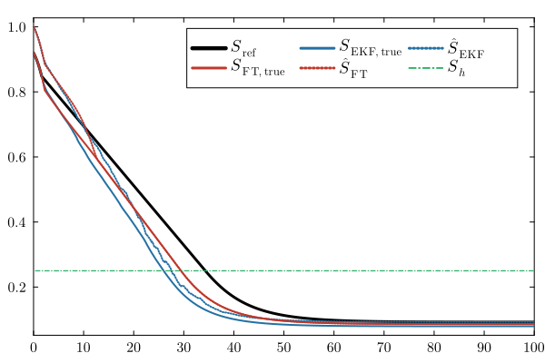
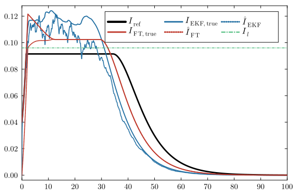
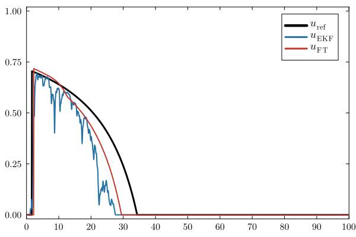
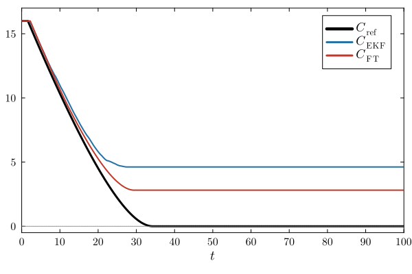
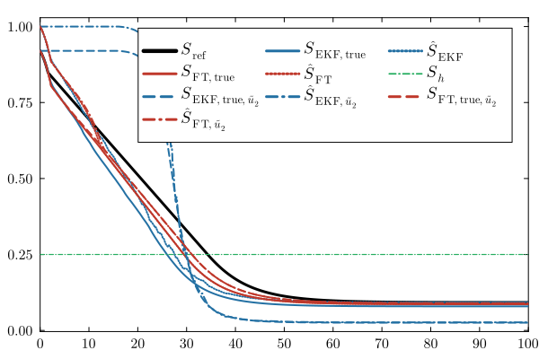
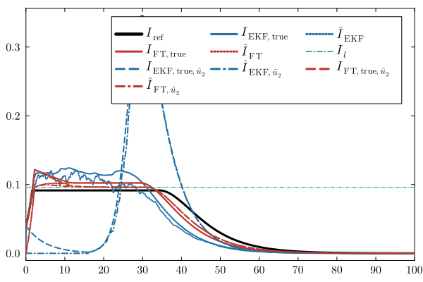
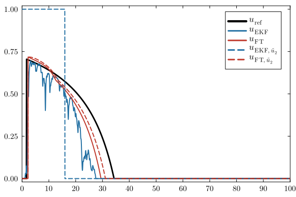
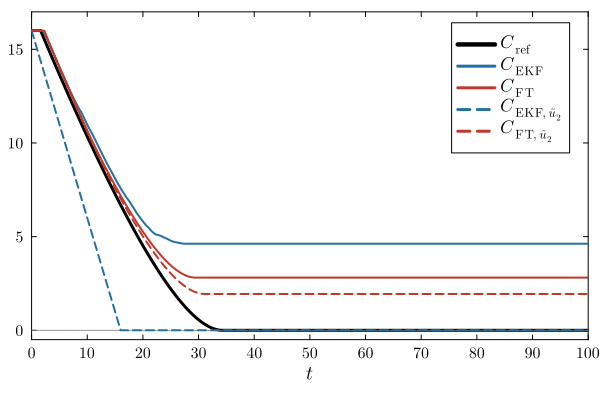

Feedback 2
using DifferentialEquations
using OrdinaryDiffEq
using LinearAlgebra
using Random
using Plots
using LaTeXStrings
using Colors
include("common.jl")
default(fontfamily = "Computer Modern", framestyle = :box)β = 0.8
γ = 0.2
S0 = 0.92
I0 = 0.04
Qbudget = 16.0
tf = 100.0
nothingThe herd-immunity threshold is
\[S_h=\frac{\gamma}{\beta}.\]
Sh = γ / β0.25Target levels
As in Feedback 1, the reference trajectory uses the target infection level computed from the estimated initial conditions $(\hat\theta_1,\hat\theta_2)$.
Define
\[I_h = \hat\theta_2+\hat\theta_1-S_h -S_h\log\left(\frac{\hat\theta_1}{S_h}\right).\]
The corresponding critical intervention budget is
\[Q_{\mathrm{crit}} = \frac{I_h-\hat\theta_2} {\beta S_h\hat\theta_2}.\]
The reference target value $I^\star$ is therefore defined by
\[I^\star= \begin{cases} \dfrac{I_h}{1+\beta S_hQ}, & Q<Q_{\mathrm{crit}},\\[2mm] \hat\theta_2, & Q\geq Q_{\mathrm{crit}}. \end{cases}\]
For Feedback 2, the feedback laws themselves use the constant lower bound
\[I_l= \frac{1-S_h+S_h\log S_h} {1+\beta S_h Q}.\]
function ISTAR(θ̂1::Real, θ̂2::Real)
Ih = θ̂2 + θ̂1 - Sh - Sh * log(θ̂1 / Sh)
Qcrit =
(Ih - θ̂2) /
(β * Sh * max(θ̂2, 1e-12))
return Qbudget < Qcrit ?
Ih / (1.0 + β * Sh * Qbudget) :
θ̂2
end
Ibar = ISTAR(S0, I0)
Il =
(1.0 - Sh + Sh * log(Sh)) /
(1.0 + β * Sh * Qbudget)
nothingFeedback laws
Two feedback laws are considered.
The first one is the NSN feedback control with the constant threshold $I_l$:
\[u_{2}(\hat I,\hat S):= \begin{cases} 1-\dfrac{S_h}{\hat S}, & \text{if } \hat I \geq I_l \text{ and } \hat S>S_h,\\[6pt] 0, & \text{otherwise}. \end{cases}\]
The second feedback is a modified version with an additional multiplicative term:
\[\widetilde u_{2}(\hat I,\hat S):= \begin{cases} 1-\dfrac{S_h}{\hat S}\dfrac{I_l}{\hat I}, & \begin{aligned} \text{if } \hat I \geq I_l \\ \text{and } \hat S > S_h, \end{aligned} \\[8pt] 0, & \text{otherwise}. \end{cases}\]
The additional term $I_l/\hat I$ in $\widetilde u_2$ amplifies the control value when $\hat I$ exceeds the threshold, forcing the infected trajectory to remain closer to the level $I_l$ while consuming more budget.
safe_ = 1e-10
@inline incidence(S, I, u) =
β * S * I * (1.0 - u)
CONTROL_LAW = :u2:u2Possible values for CONTROL_LAW:
:u2:u2_tilde
u2_exact(Ŝ, Î) =
(Ŝ ≤ Sh || Î < Il) ?
0.0 :
1.0 - Sh / Ŝ
u2_tilde_exact(Ŝ, Î) =
(Ŝ ≤ Sh || Î < Il) ?
0.0 :
1.0 - (Sh / Ŝ) * (Il / Î)
ft_control(Ŝ, Î) =
CONTROL_LAW === :u2 ?
u2_exact(Ŝ, Î) :
u2_tilde_exact(Ŝ, Î)
nothingSmooth control used for the EKF
For the Extended Kalman Filter simulation, the discontinuous switching conditions are regularized.
We introduce
\[\sigma_\varepsilon(z) = \frac12 \left( 1+\tanh\left(\frac{z}{\varepsilon}\right) \right).\]
ϵ_I = 1e-2
ϵ_S = 1e-6
@inline function sigmoid_stable(z, ϵ)
r = z / ϵ
if r <= -40.0
return 0.0
elseif r >= 40.0
return 1.0
else
return 0.5 * (1.0 + tanh(r))
end
end
nothingFor $u_2$,
function nsn_u2(Ŝ, Î)
Ssafe = max(Ŝ, safe_)
σI = sigmoid_stable(
Î - Il,
ϵ_I
)
σS = sigmoid_stable(
Ssafe - Sh,
ϵ_S
)
return clamp(
(1.0 - Sh / Ssafe) *
σI *
σS,
0.0,
1.0
)
end
nothingFor $\widetilde u_2$,
function nsn_u2_tilde(Ŝ, Î)
Ssafe = max(Ŝ, safe_)
Isafe = max(Î, safe_)
σI = sigmoid_stable(
Î - Il,
ϵ_I
)
σS = sigmoid_stable(
Ssafe - Sh,
ϵ_S
)
return clamp(
(1.0 - Sh / Ssafe) *
(Il / Isafe) *
σI *
σS,
0.0,
1.0
)
end
nsn_control(Ŝ, Î) =
CONTROL_LAW === :u2 ?
nsn_u2(Ŝ, Î) :
nsn_u2_tilde(Ŝ, Î)
nothingReference trajectory
The reference solution is divided into three phases.
Phase 1 — Uncontrolled epidemic
Initially,
\[u(t)=0.\]
The system therefore evolves according to
\[\begin{aligned} \dot S &= -\beta SI,\\ \dot I &= \beta SI-\gamma I. \end{aligned}\]
until the infection reaches the prescribed level $I^\star$.
tgrid = 0.0:0.05:tf
cb1 =
ContinuousCallback(
(v, t, integrator) ->
v[2] - Ibar,
terminate!
)
sol1 = solve(
ODEProblem(
(dv, v, p, t) -> begin
y = β * v[1] * v[2]
dv[1] = -y
dv[2] = y - γ * v[2]
dv[3] = 0.0
end,
[S0, I0, Qbudget],
(0.0, tf)
),
saveat = tgrid,
callback = cb1,
reltol = 1e-8,
abstol = 1e-8
)
nothingPhase 2 — Intervention arc
Once $I=I^\star$, the feedback
\[u(t)=1-\frac{S_h}{S(t)}\]
is applied.
The budget variable satisfies
\[\dot C(t)=-u(t).\]
The intervention ends either when the budget is exhausted or when $S=S_h$.
cb2_C =
ContinuousCallback(
(v, t, integrator) -> v[3],
terminate!
)
cb2_S =
ContinuousCallback(
(v, t, integrator) ->
v[1] - Sh,
nothing,
terminate!
)
cb2 = CallbackSet(cb2_C, cb2_S)
sol2 = solve(
ODEProblem(
(dv, v, p, t) -> begin
S, I, C =
v[1], v[2], v[3]
u = 1.0 - Sh / S
y = β * S * I
dv[1] = -y * (1 - u)
dv[2] = y * (1 - u) - γ * I
dv[3] = -u
end,
sol1.u[end],
(sol1.t[end], tf)
),
saveat = tgrid,
callback = cb2,
reltol = 1e-8,
abstol = 1e-8
)
nothingPhase 3 — Final uncontrolled trajectory
After the controlled phase,
\[u(t)=0\]
again.
sol3 = solve(
ODEProblem(
(dv, v, p, t) -> begin
y = β * v[1] * v[2]
dv[1] = -y
dv[2] = y - γ * v[2]
dv[3] = 0.0
end,
sol2.u[end],
(sol2.t[end], tf)
),
saveat = tgrid,
reltol = 1e-8,
abstol = 1e-8
)
nothingThe three phases are concatenated as follows:
t_ref = [
sol1.t;
sol2.t[2:end];
sol3.t[2:end]
]
S_ref = [
sol1[1, :];
sol2[1, 2:end];
sol3[1, 2:end]
]
I_ref = [
sol1[2, :];
sol2[2, 2:end];
sol3[2, 2:end]
]
C_ref = [
sol1[3, :];
sol2[3, 2:end];
sol3[3, 2:end]
]
n1 = length(sol1.t)
n2 = length(sol2.t) - 1
n3 = length(sol3.t) - 1
u_ref = [
zeros(n1);
1.0 .- Sh ./ S_ref[n1+1:n1+n2];
zeros(n3)
]
nothingExtended Kalman Filter
We next compare the finite-time observer with a continuous-time Extended Kalman Filter.
Let
\[x= \begin{pmatrix} S\\ I \end{pmatrix}.\]
The measured quantity is the epidemic incidence
\[h(x,u) = \beta SI(1-u).\]
The EKF is written as
\[\dot{\hat x} = f(\hat x,u) + PH^\top R^{-1} \left( y-h(\hat x,u) \right),\]
with covariance equation
\[\dot P = AP+PA^\top - PH^\top R^{-1}HP + Q.\]
EKF parameters
R =
1e-4
Qproc =
Matrix(
Diagonal(
[1e-2, 1e-2]
)
)
P0 =
Matrix(
Diagonal(
[1e-2, 1e-2]
)
)
Ŝ0, Î0 =
1.0, 0.0
meas_noise_amp =
0.1
nothingMeasurement noise
A deterministic multi-frequency signal is used to generate the measurement perturbation.
const NOISE_W =
(
0.17,
0.41,
0.93,
2.13,
3.71,
7.29,
11.93,
19.07
)
const NOISE_P =
(
0.00,
1.13,
2.47,
0.62,
4.01,
5.28,
1.97,
3.55
)
@inline function meas_noise(t)
s = 0.0
@inbounds for k in eachindex(NOISE_W)
s += sin(
NOISE_W[k] * t +
NOISE_P[k]
)
end
return meas_noise_amp *
sqrt(2.0 / length(NOISE_W)) *
s
end
nothingThe noisy measurement is
\[y(t) = \beta S(t)I(t) (1-u(t)) \left( 1+\nu(t) \right).\]
EKF dynamics
function ekf_rhs!(dz, z, _, t)
S =
z[1]
I =
z[2]
Ŝ =
z[3]
Î =
z[4]
C_hat =
z[9]
P =
reshape(
@view(z[5:8]),
2,
2
)
u_raw =
nsn_control(Ŝ, Î)
u =
C_hat > 0.0 ?
u_raw :
0.0
h_true =
incidence(S, I, u)
dS =
-h_true
dI =
h_true - γ * I
y =
h_true *
(1.0 + meas_noise(t))
S_eval =
max(Ŝ, safe_)
I_eval =
max(Î, safe_)
h_hat =
incidence(
S_eval,
I_eval,
u
)
innovation =
y - h_hat
A = [
-β * I_eval * (1.0 - u) -β * S_eval * (1.0 - u);
β * I_eval * (1.0 - u) β * S_eval * (1.0 - u) - γ
]
H = [
β * I_eval * (1.0 - u) β * S_eval * (1.0 - u)
]
K =
(P * H') / R
f_hat = [
-β * S_eval * I_eval * (1.0 - u),
β * S_eval * I_eval * (1.0 - u) -
γ * I_eval
]
d_hat =
f_hat +
vec(K) * innovation
if Ŝ <= safe_ &&
d_hat[1] < 0.0
d_hat[1] = 0.0
end
if Î <= 0.0 &&
d_hat[2] < 0.0
d_hat[2] = 0.0
end
dP =
A * P +
P * A' -
(P * H' * H * P) / R +
Qproc
dz[1] = dS
dz[2] = dI
dz[3] = d_hat[1]
dz[4] = d_hat[2]
dz[5:8] .= vec(dP)
dz[9] = -u
return nothing
end
nothingThe intervention is disabled after budget exhaustion:
cb_budget_ekf =
ContinuousCallback(
(z, t, integrator) ->
z[9],
integrator ->
(integrator.u[9] = 0.0)
)
nothingThe complete EKF simulation is
z0_ekf = [
S0,
I0,
Ŝ0,
Î0,
vec(P0)...,
Qbudget
]
prob_ekf =
ODEProblem(
ekf_rhs!,
z0_ekf,
(0.0, tf)
)
sol_ekf =
solve(
prob_ekf,
AutoTsit5(
Rosenbrock23()
);
dt = 1e-4,
dtmax = 5e-3,
reltol = 1e-6,
abstol = 1e-6,
saveat = 0.05,
maxiters = 10^6,
callback =
cb_budget_ekf
)
nothingThe resulting trajectories are extracted using
t_ekf =
sol_ekf.t
S_ekf =
[z[1] for z in sol_ekf.u]
I_ekf =
[z[2] for z in sol_ekf.u]
Shat_ekf =
[z[3] for z in sol_ekf.u]
Ihat_ekf =
[z[4] for z in sol_ekf.u]
C_ekf =
[z[9] for z in sol_ekf.u]
u_ekf =
ifelse.(
C_ekf .> 0.0,
nsn_control.(
Shat_ekf,
Ihat_ekf
),
0.0
)
e_S_ekf =
abs.(
S_ekf .-
Shat_ekf
)
e_I_ekf =
abs.(
I_ekf .-
Ihat_ekf
)
nothingFinite-time observer
We now use a finite-time parameter estimator based on Dynamic Regressor Extension and Mixing (DREM).
The transformed states are reconstructed according to
\[\hat S = \hat\theta_1+\chi_1,\]
and
\[\hat I = \chi_2+ e^{-\gamma t} \hat\theta_2.\]
FT Observer parameters
λ_id = 1e-4
ρ_id = 1e6
α_id = 0.3
ε_id = 1e-6
Ŝ0_ft = 1.0
Î0_ft = 0.0
Y0 = β * S0 * I0
nothingDREM dynamics
Let
\[\psi_1 = (1-u)\beta\chi_2,\]
and
\[\psi_2 = (1-u)\beta e^{-\gamma t}\chi_1.\]
The filtered regression variables generate the determinant
\[\Delta = \Omega_{11}\Omega_{22} - \Omega_{12}\Omega_{21}.\]
The finite-time parameter estimator has the structure
\[\dot{\hat\theta}_i = \rho \Delta \frac{ Y_i-\Delta\hat\theta_i }{ \left| Y_i-\Delta\hat\theta_i \right|^{1-\alpha} + \varepsilon }.\]
The complete implementation is
function sir_drem!(dv, v, p, t)
egt =
exp(-γ * t)
Ŝ =
v[11] +
v[3]
Î =
v[4] +
egt * v[12]
u_raw =
ft_control(
Ŝ,
Î
)
u =
v[13] > 0.0 ?
u_raw :
0.0
y =
β *
v[1] *
v[2] *
(1.0 - u)
dv[1] =
-y
dv[2] =
y -
γ * v[2]
dv[3] =
-y
dv[4] =
-γ * v[4] +
y
ψ1 =
(1.0 - u) *
β *
v[4]
ψ2 =
(1.0 - u) *
β *
egt *
v[3]
z =
y -
(1.0 - u) *
(
egt * Y0 +
β * v[3] * v[4]
)
dv[5] =
ψ1 * z -
λ_id * v[5]
dv[6] =
ψ2 * z -
λ_id * v[6]
dv[7] =
ψ1^2 -
λ_id * v[7]
dv[8] =
ψ1 * ψ2 -
λ_id * v[8]
dv[9] =
ψ2 * ψ1 -
λ_id * v[9]
dv[10] =
ψ2^2 -
λ_id * v[10]
Δ =
v[7] * v[10] -
v[8] * v[9]
Y1 =
v[10] * v[5] -
v[8] * v[6]
Y2 =
-v[9] * v[5] +
v[7] * v[6]
dv[11] =
ρ_id *
Δ *
(Y1 - Δ * v[11]) /
(
abs(
Y1 -
Δ * v[11]
)^(1 - α_id)
+
ε_id
)
dv[12] =
ρ_id *
Δ *
(Y2 - Δ * v[12]) /
(
abs(
Y2 -
Δ * v[12]
)^(1 - α_id)
+
ε_id
)
dv[13] =
-u
return nothing
end
nothingInitial condition and numerical integration
v0_ft =
zeros(13)
v0_ft[1] =
S0
v0_ft[2] =
I0
v0_ft[11] =
Ŝ0_ft
v0_ft[12] =
Î0_ft
v0_ft[13] =
Qbudget
nothingBudget exhaustion is handled using
cb_budget_ft =
ContinuousCallback(
(v, t, integrator) ->
v[13],
integrator ->
(integrator.u[13] = 0.0)
)
nothingThe system is integrated with a stiff solver:
prob_ft =
ODEProblem(
sir_drem!,
v0_ft,
(0.0, tf)
)
sol_ft =
solve(
prob_ft,
Tsit5();
reltol = 1e-9,
abstol = 1e-11,
dtmax = 0.1,
saveat = 0.05,
maxiters =
Int(1e7),
callback =
cb_budget_ft
)
nothingEstimated trajectories
t_ft =
sol_ft.t
S_ft =
sol_ft[1, :]
I_ft =
sol_ft[2, :]
C_ft =
sol_ft[13, :]
χ1_ft =
sol_ft[3, :]
χ2_ft =
sol_ft[4, :]
θ1hat_ft =
sol_ft[11, :]
θ2hat_ft =
sol_ft[12, :]
nothingThe state estimates are reconstructed using
egt_v_ft =
exp.(
-γ .* t_ft
)
Shat_ft =
θ1hat_ft .+
χ1_ft
Ihat_ft =
χ2_ft .+
egt_v_ft .* θ2hat_ft
u_ft =
ifelse.(
C_ft .> 0.0,
ft_control.(
Shat_ft,
Ihat_ft
),
0.0
)
nothingThe estimation errors are
e_S_ft =
abs.(
S_ft .-
Shat_ft
)
e_I_ft =
abs.(
I_ft .-
Ihat_ft
)
nothingPerformance indicators
The maximum estimation errors are computed for both observers.
For the EKF,
println(
"EKF max |S-Ŝ| = ",
maximum(e_S_ekf)
)
println(
"EKF max |I-Î| = ",
maximum(e_I_ekf)
)EKF max |S-Ŝ| = 0.08134060052959169
EKF max |I-Î| = 0.04For the finite-time observer,
max_I_ft, idx_ft =
findmax(I_ft)
println(
"FT max I(t) = ",
max_I_ft,
" at t = ",
t_ft[idx_ft]
)
println(
"FT max |S-Ŝ| = ",
maximum(e_S_ft)
)
println(
"FT max |I-Î| = ",
maximum(e_I_ft)
)FT max I(t) = 0.12159813480565351 at t = 2.25
FT max |S-Ŝ| = 0.08000000000000007
FT max |I-Î| = 0.04Time spent above the infection threshold
An additional performance indicator measures how long the infection trajectory remains above $I^\star$.
function crossing_stats(
tvec,
Ivec,
thresh
)
n =
length(tvec)
entry =
findfirst(
k ->
Ivec[k] <= thresh &&
Ivec[k+1] > thresh,
1:n-1
)
entry === nothing &&
return (
nothing,
nothing,
0.0
)
interp(k) =
tvec[k] +
(
thresh -
Ivec[k]
) *
(
tvec[k+1] -
tvec[k]
) /
(
Ivec[k+1] -
Ivec[k]
)
t_in =
interp(entry)
exitidx =
findfirst(
k ->
k > entry &&
Ivec[k] >= thresh &&
Ivec[k+1] < thresh,
1:n-1
)
t_out =
exitidx === nothing ?
tvec[end] :
interp(exitidx)
return (
t_in,
t_out,
t_out - t_in
)
end
nothingThen,
_, _, dt_ekf =
crossing_stats(
t_ekf,
I_ekf,
Ibar
)
_, _, dt_ft =
crossing_stats(
t_ft,
I_ft,
Ibar
)
println(
"EKF: I(t) above Ibar for Δt ≈ ",
dt_ekf
)
println(
"FT : I(t) above Ibar for Δt ≈ ",
dt_ft
)EKF: I(t) above Ibar for Δt ≈ 30.004758835319876
FT : I(t) above Ibar for Δt ≈ 31.763206203301966Closed loop with the modified law
Since ft_control and nsn_control dispatch on CONTROL_LAW at call time, the same closed-loop simulations can be repeated with the modified law simply by switching the symbol and re-solving the same problems. No other code is modified.
CONTROL_LAW = :u2_tilde
nothingThe EKF-based closed loop with $\widetilde u_2$:
sol_ekf_ut =
solve(
prob_ekf,
AutoTsit5(
Rosenbrock23()
);
dt = 1e-4,
dtmax = 5e-3,
reltol = 1e-6,
abstol = 1e-6,
saveat = 0.05,
maxiters = 10^6,
callback =
cb_budget_ekf
)
nothingt_ekf_ut =
sol_ekf_ut.t
S_ekf_ut =
[z[1] for z in sol_ekf_ut.u]
I_ekf_ut =
[z[2] for z in sol_ekf_ut.u]
Shat_ekf_ut =
[z[3] for z in sol_ekf_ut.u]
Ihat_ekf_ut =
[z[4] for z in sol_ekf_ut.u]
C_ekf_ut =
[z[9] for z in sol_ekf_ut.u]
u_ekf_ut =
ifelse.(
C_ekf_ut .> 0.0,
nsn_control.(
Shat_ekf_ut,
Ihat_ekf_ut
),
0.0
)
e_S_ekf_ut =
abs.(
S_ekf_ut .-
Shat_ekf_ut
)
e_I_ekf_ut =
abs.(
I_ekf_ut .-
Ihat_ekf_ut
)
nothingThe finite-time-observer-based closed loop with $\widetilde u_2$:
sol_ft_ut =
solve(
prob_ft,
Tsit5();
reltol = 1e-9,
abstol = 1e-11,
dtmax = 0.1,
saveat = 0.05,
maxiters =
Int(1e7),
callback =
cb_budget_ft
)
nothingt_ft_ut =
sol_ft_ut.t
S_ft_ut =
sol_ft_ut[1, :]
I_ft_ut =
sol_ft_ut[2, :]
C_ft_ut =
sol_ft_ut[13, :]
χ1_ft_ut =
sol_ft_ut[3, :]
χ2_ft_ut =
sol_ft_ut[4, :]
θ1hat_ft_ut =
sol_ft_ut[11, :]
θ2hat_ft_ut =
sol_ft_ut[12, :]
egt_v_ft_ut =
exp.(
-γ .* t_ft_ut
)
Shat_ft_ut =
θ1hat_ft_ut .+
χ1_ft_ut
Ihat_ft_ut =
χ2_ft_ut .+
egt_v_ft_ut .* θ2hat_ft_ut
u_ft_ut =
ifelse.(
C_ft_ut .> 0.0,
ft_control.(
Shat_ft_ut,
Ihat_ft_ut
),
0.0
)
e_S_ft_ut =
abs.(
S_ft_ut .-
Shat_ft_ut
)
e_I_ft_ut =
abs.(
I_ft_ut .-
Ihat_ft_ut
)
nothingPerformance indicators for the modified law:
println(
"EKF[u2_tilde] max |S-Ŝ| = ",
maximum(e_S_ekf_ut)
)
println(
"EKF[u2_tilde] max |I-Î| = ",
maximum(e_I_ekf_ut)
)
max_I_ft_ut, idx_ft_ut =
findmax(I_ft_ut)
println(
"FT[u2_tilde] max I(t) = ",
max_I_ft_ut,
" at t = ",
t_ft_ut[idx_ft_ut]
)
println(
"FT[u2_tilde] max |S-Ŝ| = ",
maximum(e_S_ft_ut)
)
println(
"FT[u2_tilde] max |I-Î| = ",
maximum(e_I_ft_ut)
)
_, _, dt_ekf_ut =
crossing_stats(
t_ekf_ut,
I_ekf_ut,
Ibar
)
_, _, dt_ft_ut =
crossing_stats(
t_ft_ut,
I_ft_ut,
Ibar
)
println(
"EKF[u2_tilde]: I(t) above Ibar for Δt ≈ ",
dt_ekf_ut
)
println(
"FT[u2_tilde]: I(t) above Ibar for Δt ≈ ",
dt_ft_ut
)EKF[u2_tilde] max |S-Ŝ| = 0.1216083459827193
EKF[u2_tilde] max |I-Î| = 0.04
FT[u2_tilde] max I(t) = 0.12159806603729628 at t = 2.25
FT[u2_tilde] max |S-Ŝ| = 0.08000000000000007
FT[u2_tilde] max |I-Î| = 0.04
EKF[u2_tilde]: I(t) above Ibar for Δt ≈ 16.640551258572327
FT[u2_tilde]: I(t) above Ibar for Δt ≈ 32.09085787537957Numerical comparison
The following plots compare
- the susceptible population,
- the infected population,
- the feedback control,
- the remaining intervention budget.
The reference trajectory is shown together with the EKF-based and finite-time-observer-based closed-loop trajectories.
COLOR_REF =
:black
COLOR_EKF =
RGB(
0.14,
0.44,
0.64
)
COLOR_FT =
RGB(
0.75,
0.22,
0.17
)
COLOR_SH =
RGB(
0.15,
0.68,
0.38
)
nothingCommon plotting options are
common = (
guidefontsize = 13,
tickfontsize = 10,
legendfontsize = 12,
framestyle = :box,
grid = false,
xticks = 0:10:tf,
xlims = (0, tf),
left_margin = 0Plots.mm,
right_margin = 1Plots.mm,
dpi = 500
)
nothingSusceptible population
pS =
plot(
t_ref,
S_ref;
lw = 3.0,
color = COLOR_REF,
label =
L"S_{\mathrm{ref}}",
legend = :topright,
legend_column = 3,
top_margin =
3Plots.mm,
bottom_margin =
1Plots.mm,
common...
)
plot!(
pS,
t_ekf,
S_ekf;
lw = 2.0,
color = COLOR_EKF,
ls = :solid,
label =
L"S_{\mathrm{EKF,true}}"
)
plot!(
pS,
t_ekf,
Shat_ekf;
lw = 2.0,
color = COLOR_EKF,
ls = :dot,
label =
L"\hat S_{\mathrm{EKF}}"
)
plot!(
pS,
t_ft,
S_ft;
lw = 2.0,
color = COLOR_FT,
ls = :solid,
label =
L"S_{\mathrm{FT,true}}"
)
plot!(
pS,
t_ft,
Shat_ft;
lw = 2.0,
color = COLOR_FT,
ls = :dot,
label =
L"\hat S_{\mathrm{FT}}"
)
hline!(
pS,
[Sh];
lw = 1.2,
color = COLOR_SH,
ls = :dashdot,
label =
L"S_h"
)
Infected population
pI =
plot(
t_ref,
I_ref;
lw = 3.0,
color = COLOR_REF,
label =
L"I_{\mathrm{ref}}",
legend = :topright,
legend_column = 3,
top_margin =
1Plots.mm,
bottom_margin =
1Plots.mm,
common...
)
plot!(
pI,
t_ekf,
I_ekf;
lw = 2.0,
color = COLOR_EKF,
ls = :solid,
label =
L"I_{\mathrm{EKF,true}}"
)
plot!(
pI,
t_ekf,
Ihat_ekf;
lw = 2.0,
color = COLOR_EKF,
ls = :dot,
label =
L"\hat I_{\mathrm{EKF}}"
)
plot!(
pI,
t_ft,
I_ft;
lw = 2.0,
color = COLOR_FT,
ls = :solid,
label =
L"I_{\mathrm{FT,true}}"
)
plot!(
pI,
t_ft,
Ihat_ft;
lw = 2.0,
color = COLOR_FT,
ls = :dot,
label =
L"\hat I_{\mathrm{FT}}"
)
hline!(
pI,
[Il];
lw = 1.2,
color = COLOR_SH,
ls = :dashdot,
label =
L"I_l"
)
Control
pU =
plot(
t_ref,
u_ref;
lw = 3.0,
color = COLOR_REF,
label =
L"u_{\mathrm{ref}}",
ylims =
(-0.02, 1.02),
legend =
:topright,
top_margin =
1Plots.mm,
bottom_margin =
1Plots.mm,
common...
)
plot!(
pU,
t_ekf,
u_ekf;
lw = 2.0,
color = COLOR_EKF,
ls = :solid,
label =
L"u_{\mathrm{EKF}}"
)
plot!(
pU,
t_ft,
u_ft;
lw = 2.0,
color = COLOR_FT,
ls = :solid,
label =
L"u_{\mathrm{FT}}"
)
Remaining budget
pC =
plot(
t_ref,
C_ref;
lw = 3.0,
color = COLOR_REF,
label =
L"C_{\mathrm{ref}}",
xlabel =
L"t",
ylims =
(-0.5, Qbudget + 1),
legend =
:topright,
top_margin =
1Plots.mm,
bottom_margin =
4Plots.mm,
common...
)
plot!(
pC,
t_ekf,
C_ekf;
lw = 2.0,
color = COLOR_EKF,
ls = :solid,
label =
L"C_{\mathrm{EKF}}"
)
plot!(
pC,
t_ft,
C_ft;
lw = 2.0,
color = COLOR_FT,
ls = :solid,
label =
L"C_{\mathrm{FT}}"
)
hline!(
pC,
[0.0];
lw = 1.0,
color = :gray,
ls = :dot,
label =
false
)
Modified feedback trajectories
The closed-loop trajectories obtained with $\widetilde u_2$ are added to the same panels using dashed line styles.
plot!(
pS,
t_ekf_ut,
S_ekf_ut;
lw = 2.0,
color = COLOR_EKF,
ls = :dash,
label =
L"S_{\mathrm{EKF,true},\widetilde u_2}"
)
plot!(
pS,
t_ekf_ut,
Shat_ekf_ut;
lw = 2.0,
color = COLOR_EKF,
ls = :dashdot,
label =
L"\hat S_{\mathrm{EKF},\widetilde u_2}"
)
plot!(
pS,
t_ft_ut,
S_ft_ut;
lw = 2.0,
color = COLOR_FT,
ls = :dash,
label =
L"S_{\mathrm{FT,true},\widetilde u_2}"
)
plot!(
pS,
t_ft_ut,
Shat_ft_ut;
lw = 2.0,
color = COLOR_FT,
ls = :dashdot,
label =
L"\hat S_{\mathrm{FT},\widetilde u_2}"
)
plot!(
pI,
t_ekf_ut,
I_ekf_ut;
lw = 2.0,
color = COLOR_EKF,
ls = :dash,
label =
L"I_{\mathrm{EKF,true},\widetilde u_2}"
)
plot!(
pI,
t_ekf_ut,
Ihat_ekf_ut;
lw = 2.0,
color = COLOR_EKF,
ls = :dashdot,
label =
L"\hat I_{\mathrm{EKF},\widetilde u_2}"
)
plot!(
pI,
t_ft_ut,
I_ft_ut;
lw = 2.0,
color = COLOR_FT,
ls = :dash,
label =
L"I_{\mathrm{FT,true},\widetilde u_2}"
)
plot!(
pI,
t_ft_ut,
Ihat_ft_ut;
lw = 2.0,
color = COLOR_FT,
ls = :dashdot,
label =
L"\hat I_{\mathrm{FT},\widetilde u_2}"
)
plot!(
pU,
t_ekf_ut,
u_ekf_ut;
lw = 2.0,
color = COLOR_EKF,
ls = :dash,
label =
L"u_{\mathrm{EKF},\widetilde u_2}"
)
plot!(
pU,
t_ft_ut,
u_ft_ut;
lw = 2.0,
color = COLOR_FT,
ls = :dash,
label =
L"u_{\mathrm{FT},\widetilde u_2}"
)
plot!(
pC,
t_ekf_ut,
C_ekf_ut;
lw = 2.0,
color = COLOR_EKF,
ls = :dash,
label =
L"C_{\mathrm{EKF},\widetilde u_2}"
)
plot!(
pC,
t_ft_ut,
C_ft_ut;
lw = 2.0,
color = COLOR_FT,
ls = :dash,
label =
L"C_{\mathrm{FT},\widetilde u_2}"
)